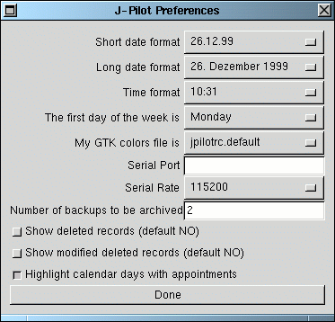

Wählen Sie das für Sie zutreffende Datumsformat im Feld ,,Short date format`` aus. Treffen Sie außerdem eine Wahl für das normale Datumsformat und das Zeitanzeigeformat.
TIP: Es kann unter bestimmten Umständen sein, daß das Fenster flickert, wenn eine neue Zeit angezeigt wird. Daher kann es Sinn machen, ein Zeitformat zu wählen, bei dem die Sekunden nicht angezeigt werden, um diese Irritationen zu minimieren.
Wählen Sie außerdem den ersten Tag der Woche in der Option ,,The first day of the week is``. Beim nächsten Aktualisieren des Kalenders werden sodann die Wochen beginnend mit diesem Tag dargestellt.
Weiterhin können Sie an dieser Stelle auch die oben schon angesprochenen Farbdateien auswählen. Beachten Sie, daß eine Veränderung dieser Einstellung erst dann wirkt, wenn JPilot erneut gestartet wird.
Der PILOTPORT kann auch an dieser Stelle eingestellt
werden. Damit teilen Sie JPilot mit, an welcher seriellen
Schnittstelle sich die PalmPilot HotSync-Schale befindet. Wenn Sie
hier keine Einstellung vornehmen, dann wird die
PILOTPORT-Umgebungsvariable benutzt. Wenn auch mit dieser kein Wert
gesetzt wird, so wird auf die Default-Einstellung /dev/pilot
zurückgegriffen.
Darunter können Sie die Geschwindigkeit der seriellen Schnittstelle angeben. Achtung: einige Rechner arbeiten nicht zuverlässig mit Raten über 9600. Grund: unbekannt.
Die letzten beiden Optionen ermöglichen es Ihnen, einzustellen, ob (1.) gelöschte Einträge angezeigt werden sollen und (2.) ob veränderte gelöschte Einträge angezeigt werden sollen. Wenn diese Optionen eingeschaltet werden, so werden die entsprechenden Einträge mit einer anderen Farbe hinterlegt. Dies kann unter Umstängen irritierend wirken.